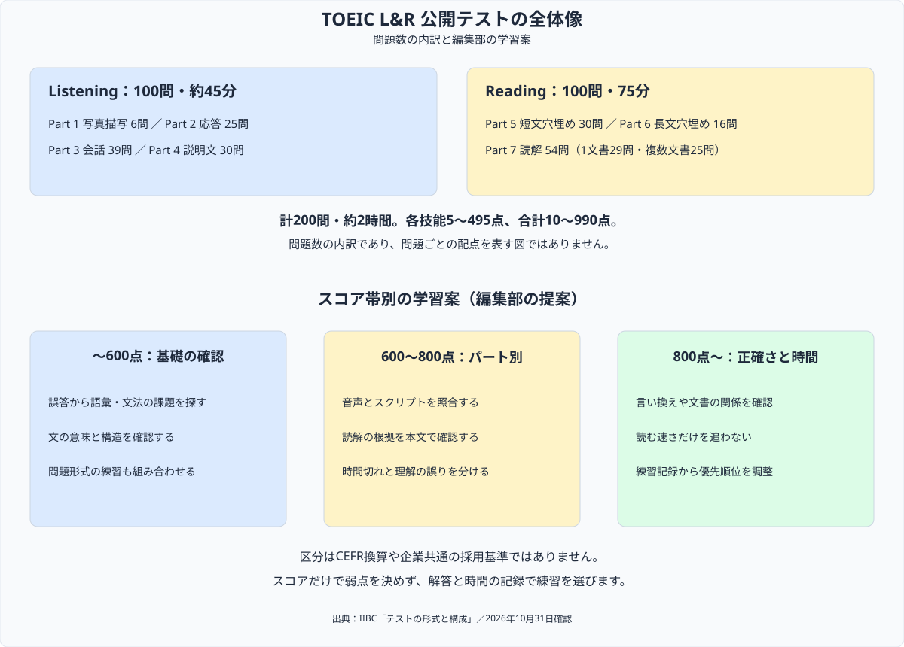

TOEIC勉強法・スコア別攻略ガイド【2026年版】
『就活や将来のキャリアのためにTOEICのハイスコアをもぎ取るぞ！』と決意して公式問題集を解いた瞬間……「うわっ、なんじゃこりゃ、2時間ノンストップで200問も解くなんて体力持たないし、後半の長文が全部呪文に見えて頭パンクするわ！」とフリーズしていませんか？（笑）
会計分野の学習で取り組んだ計画と記録の考え方をもとに、ここではTOEIC L&Rの試験情報と学習案を整理します。必要時間や成果は一律に決めず、自分の解答記録から次の練習を選びましょう。
まずは目標スコアと受験日を一つ決め、今の模試スコアとの差をメモしてください。その差をリスニング・リーディングのどちらで埋めるか選ぶと、学習順が具体的になります。
この記事はTOEIC Listening & Reading（L&R）の国内公開テストを対象に、試験の構成と学習計画の立て方を整理します。TOEIC ProgramにはSpeaking & Writingなどの別のテストもあるため、提出先が指定する試験名を最初に確認しましょう。学習方法は編集部の提案であり、点数や到達期間を保証するものではありません。
TOEIC L&R 公開テストの基本情報
| 項目 | 内容 |
|---|---|
| 測定する技能 | Listening・Reading |
| 問題数と時間 | Listening 100問・約45分／Reading 100問・75分。計200問・約2時間 |
| スコア | 各5〜495点、合計10〜990点（5点刻み）。合格・不合格の判定はない |
| 開催日 | 開催地によって異なるため、申込時に公式の日程を確認 |
| 通常受験料（税込） | 紙の公式認定証あり7,810円／なし7,700円（デジタル公式認定証はどちらも発行） |
| 公開テスト受験者の平均 | 2025年度616点（Listening 337点・Reading 279点）、受験者数755,473人 |
平均点の対象は2025年4月〜2026年3月の国内公開テスト受験者です。日本人全体の平均やIPテストの平均ではありません。2024年度の同じ集計は615点でした。団体向けIPテスト、とくにオンライン形式は公開テストと問題数・所要時間が異なります。
出典：IIBC「テストの形式と構成」／IIBC「受験までの流れ・受験料」／IIBC「TOEIC Program DATA & ANALYSIS 2026」4ページ（2026年10月31日確認）

目標スコアと勉強時間の決め方
「現在の点数から何時間で700点に届く」と一律に言える公式の必要時間は、今回確認した資料からは確認できませんでした。根拠のない時間換算は使わず、受験日・確保できる時間・誤答の原因を分けて計画します。
- 応募先・学校の公式要項から、テスト名、必要スコア、提出期限、受験日の条件を記録する。
- 公開テスト形式の問題を時間を計って解き、Listening／Readingとパートごとの誤答・時間切れを記録する。
- 次の一週間に使える時間を先に決め、語彙・文法・聞き取り・時間管理のうち、課題が大きいものに配分する。
- 同じ問題の解き直しと未見の問題を区別し、学習計画を見直す。練習の正答数を本番の公式スコアと同一視しない。
スコア別攻略法：学習案として使う
以下の区分は編集部による練習の整理です。スコアだけで弱点を決めつけず、自分の解答記録に合わせて入れ替えてください。
〜600点を目指す：語彙と文法を確認する
文の構造や語の意味がわからない誤答は、基本の文法と語彙に戻って確認します。基礎の復習と実際の問題形式の練習を行き来し、わかったつもりの項目を見つけましょう。
600〜730点を目指す：パートごとの誤答を整理する
Part 5は文法・語彙・文脈のどこで判断を誤ったかを記録します。Part 7は根拠となる箇所を本文で示し、読み飛ばした条件や言い換えを確認する練習案です。
730〜800点を目指す：聞き取れない理由を分ける
音声を聞き直し、未知語なのか、知っている語の音が認識できないのか、会話の流れを追えなかったのかを分けます。リスニングが得意なら、読解の課題を優先しても構いません。
800点以上を目指す：正確さと時間管理を両方見る
時間をかければ解ける問題と、時間があっても誤る問題を分けます。読む速さだけを追わず、複数文書の情報のつながりや、選択肢を除外する根拠まで確認しましょう。
パート別・問題数と練習の観点
| パート | 問題数 | 内容 | 練習の観点（提案） |
|---|---|---|---|
| Part 1 | 6問 | 写真描写 | 動作・位置関係を音声と照合 |
| Part 2 | 25問 | 応答 | 質問の意図と応答の関係を確認 |
| Part 3 | 39問 | 会話 | 話者の目的と次の行動を確認 |
| Part 4 | 30問 | 説明文 | 場面・要点・詳細を整理 |
| Part 5 | 30問 | 短文穴埋め | 文法・語彙・文脈を区別 |
| Part 6 | 16問 | 長文穴埋め | 文と文のつながりを確認 |
| Part 7 | 54問 | 読解 | 1文書29問・複数文書25問の根拠を確認 |
出典：IIBC「テストの形式と構成」（2026年10月31日確認）
シャドーイングの練習案（4ステップ）
シャドーイングは音声を追って発話する練習です。ここでは取り組み方の一例を示します。これだけで一定の点数に届く、ほかの練習より優れている、という意味ではありません。
- スクリプトを確認：知らない語や文の意味を調べる。
- 音声と照合：文字ではわかるのに聞き取れない部分を探す。
- 短い区間で発話：無理なく追える長さに区切り、音声をまねる。
- 録音して比較：抜けた語や音のつながりを確認し、聞き取り直す。
学習アプリ・公式音声の選び方
| サービス | 今回確認できた内容 | 料金の確認範囲 |
|---|---|---|
| スタディサプリENGLISH | TOEIC L&R TEST対策コース・ベーシックプラン | Web申込の月額表示3,278円。アプリストア経由・長期パック・キャンペーンは条件が異なる |
| abceed | Freeの音声再生・マークシート機能と、有料Proの案内 | Freeは無料。Proは契約期間などで異なるため申込画面で総額を確認 |
| TOEIC公式教材アプリ・音声ダウンロード | 対象の公式教材の音声を提供。アプリは会員登録が必要 | 対象音声は無料。書籍代は別途、巻・版ごとに確認 |
出典：リクルート「料金プラン」／Globee「abceed」／IIBC「音声ダウンロード」（2026年10月31日確認）
Part 7まで取り組む時間管理
Reading全体の制限時間は75分です。以下は75分に収まる編集部の配分例で、公式指定の解答時間ではありません。時間切れが多い箇所と正答率を見て調整してください。
| 範囲 | 問題数 | 練習用の配分例 |
|---|---|---|
| Part 5 | 30問 | 10分 |
| Part 6 | 16問 | 10分 |
| Part 7：1文書 | 29問 | 25分 |
| Part 7：複数文書 | 25問 | 30分 |
| 合計 | 100問 | 75分 |
出典：IIBC「テストの形式と構成」（2026年10月31日確認）
単語帳・教材を選ぶときの確認
「TOEIC L&R TEST 出る単特急 銀のフレーズ」は出版社の案内では1,000語を収録しています。以前の「630語」という記載を訂正しました。収録語数だけで教材の適性は決まらないため、試し読みで既知語の割合や解説の読みやすさを確認する提案です。
出典：朝日新聞出版「出る単特急 銀のフレーズ」（2026年10月31日確認）
公式問題集は自分が受けるL&Rの形式に対応する巻・版を選び、音声の提供方法も確認します。書籍・アプリを増やす前に、今の教材の誤答原因が説明できるかを点検しましょう。
継続するための学習サイクル
- 無理なく取れる学習時間を予定表に入れる。
- 取り組んだ問題・誤答原因・次の復習項目を記録する。
- 週ごとに学習量と理解度を見直し、方法や配分を調整する。
まとめ
- 公開テストは200問・約2時間。IPオンライン形式とは区別する。
- 平均616点は2025年度の国内公開テスト受験者の集計。
- 必要時間や採用評価を一律の数値にせず、提出先の条件と自分の解答記録から計画する。
- 学習案を試した結果を記録し、次の練習に反映する。